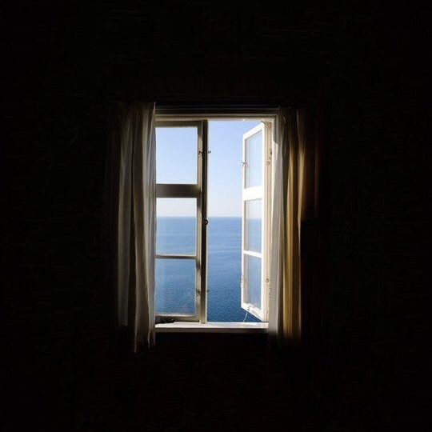
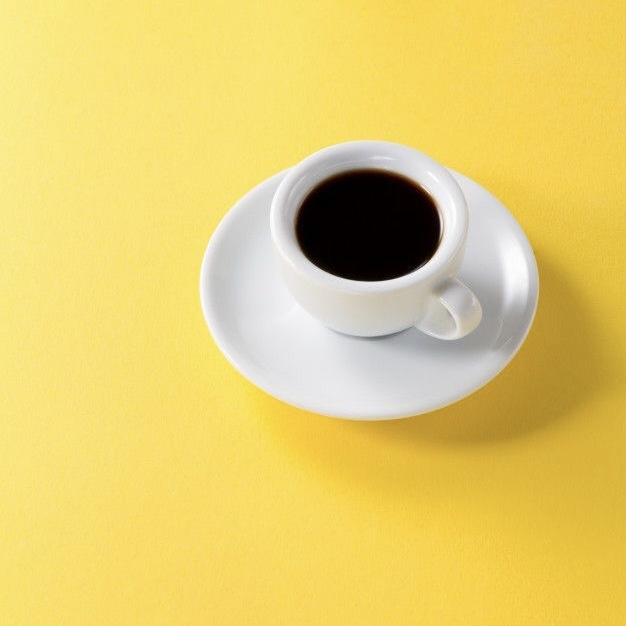

Easy Tips to Take Minimalist Photos for your Instagram
1. Add Negative Space
Negative space in photography simply means the spaces around and between the subject(s) you are taking. Adding negative space adds a sense of minimalism and serenity as opposed to chaos. An easy way to do this is to make sure your subject does not take up more than 50% of your photo. Many popular Instagram pages go even further and limits their subjects to only 1/9th of the picture.

2. Limit Colors
Colors make up the mood of your photos. They are fun and great.Limiting the colors will make your image look cleaner and much more in order. The less colors the better. Try to find the right balance.
3. Go Monochrome
If you can’t get the hang of colors, go monochrome! Monochrome just means black and white. It is a very well known style and very popular with street photography. You can’t really go more minimal with having only 2 colors (in technical terms, black and white are not even colors!).
4. Less Is More
I know it is very tempting to take a picture that includes everything. However, less elements in a picture adds to the minimalist and less cluttered look of the image.

5. Lines, Patterns And Simple Geometric Shapes
A great way to make your images minimal while not look too plain is to have geometric shapes, patterns or lines in them. Among the places you can find these is at most modern architecture buildings.
6. Symmetry
Symmetric images works almost like patterns. They convey a sense of order and simplicity. It is very simple to achieve a symmetric image for you Instagram. Firstly, find something with a symmetry and stand facing the mid point (axis of symmetry) and just shoot straight. It can be buildings, fountains, houses or even people’s faces.